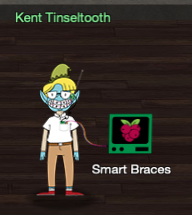
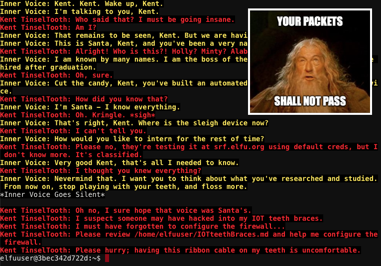
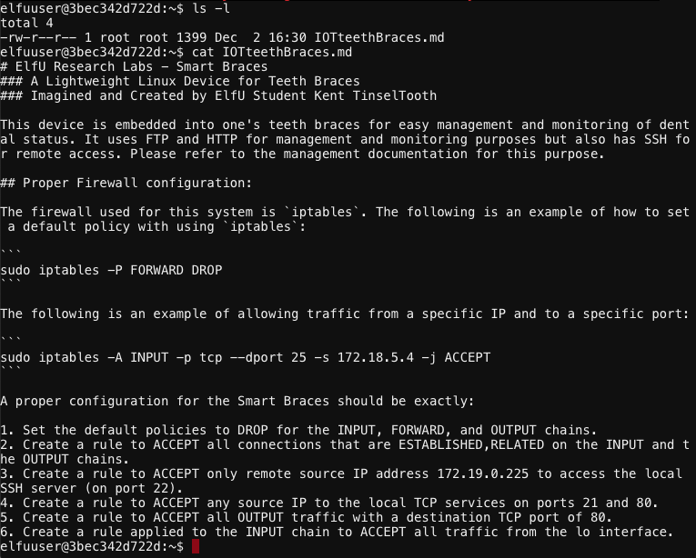
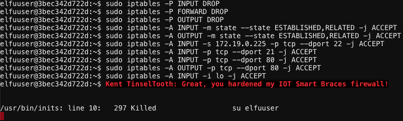

Kent Tinseltooth - Smart Braces#

Objective: Open the Sleigh Shop Door
Request#
OK, this is starting to freak me out!
Oh sorry, I'm Kent Tinseltooth. My Smart Braces are acting up.
Do... Do you ever get the feeling you can hear things? Like, voices?
I know, I sound crazy, but ever since I got these... Oh!
Do you think you could take a look at my Smart Braces terminal?
I'll bet you can keep other students out of my head, so to speak.
It might just take a bit of Iptables work.
Video#
Resources#
Solution#
The challenge starts off with a conversation between Kent and a mysterious voice his head. It doesn't provide any real tips or hints except maybe for a little bit of context and a mention of the srf.elfu.org domain which we'll be using in objective 12.

/home/elfuuser/IOTteethBraces.md contains the firewall configuration for the Smart Braces:
- Set the default policies to DROP for the INPUT, FORWARD, and OUTPUT chains.
- Create a rule to ACCEPT all connections that are ESTABLISHED,RELATED on the INPUT and the OUTPUT chains.
- Create a rule to ACCEPT only remote source IP address 172.19.0.225 to access the local SSH server (on port 22).
- Create a rule to ACCEPT any source IP to the local TCP services on ports 21 and 80.
- Create a rule to ACCEPT all OUTPUT traffic with a destination TCP port of 80.
- Create a rule applied to the INPUT chain to ACCEPT all traffic from the lo interface.

Set up the following iptables rules to match the required configuration:
sudo iptables -P INPUT DROP
sudo iptables -P FORWARD DROP
sudo iptables -P OUTPUT DROP
sudo iptables -A INPUT -m state --state ESTABLISHED,RELATED -j ACCEPT
sudo iptables -A OUTPUT -m state --state ESTABLISHED,RELATED -j ACCEPT
sudo iptables -A INPUT -s 172.19.0.225 -p tcp --dport 22 -j ACCEPT
sudo iptables -A INPUT -p tcp --dport 21 -j ACCEPT
sudo iptables -A INPUT -p tcp --dport 80 -j ACCEPT
sudo iptables -A OUTPUT -p tcp --dport 80 -j ACCEPT
sudo iptables -A INPUT -i lo -j ACCEPT

That's it! Firewall rules applied and inner peace for Kent achieved!
Answer#
See solution.
Hint#
Oh thank you! It's so nice to be back in my own head again. Er, alone.
By the way, have you tried to get into the crate in the Student Union? It has an interesting set of locks.
There are funny rhymes, references to perspective, and odd mentions of eggs!
And if you think the stuff in your browser looks strange, you should see the page source...
Special tools? No, I don't think you'll need any extra tooling for those locks.
BUT - I'm pretty sure you'll need to use Chrome's developer tools for that one.
Or sorry, you're a Firefox fan?
Yeah, Safari's fine too - I just have an ineffible hunger for a physical Esc key.
Edge? That's cool. Hm? No no, I was thinking of an unrelated thing.
Curl fan? Right on! Just remember: the Windows one doesn't like double quotes.
Old school, huh? Oh sure - I've got what you need right here...
And I hear the Holiday Hack Trail game will give hints on the last screen if you complete it on Hard.